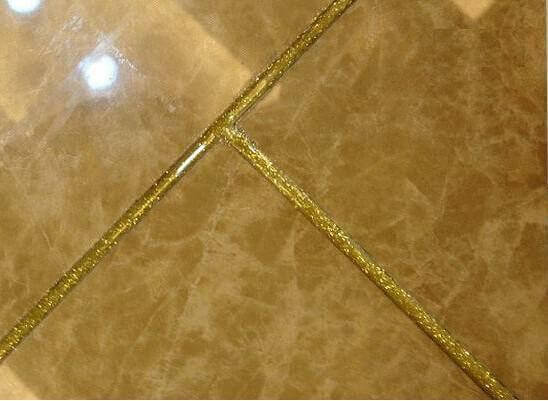

美缝剂由多种高分子聚合物和高档颜料精制而成，美缝剂凝固后在瓷砖缝上会形成光滑如瓷的洁净面，耐磨、防水、防油、不沾脏污、有优异的自洁性，不易藏污纳垢，易清洁、一擦就净，它的硬度，黏结强度。
美缝剂的价格比填缝剂要高出很多，所以如果用的较多的话，也可以采用下面一层用白水泥，上面用美缝剂。
对瓷砖的有哪些作用?
由 于瓷砖美缝剂越来越受到广大客户的欢迎，很多人也都对青花瓷美缝剂有所了解，但是很多人并不知道美缝剂对瓷砖有什么好处，使用美缝剂后瓷砖也有怎么样的变 化，从视觉上，美缝剂给家居装修带来全新的感觉，不会因为瓷砖的缝隙影响到家居的美观，这使得它在美化空间上尤为受到欢迎，此状涂抹上美缝剂后质感细腻， 色泽均匀牢固，有很强的装饰效果。
它对建材产品尤其是瓷砖可以起到很好的保护作用，美缝剂涂抹在瓷砖的缝隙之后能很好的吸收底材和砖石之间的胀缩变形，延长饰面的使用寿命。
还能够很好的防止建材产品产生纹裂，明显提高抗渗能力。美缝剂凝固在此状缝隙之后在瓷砖缝上会形成光滑如瓷的洁净面，不仅耐磨、防水而且防油、不沾脏污、有 优异的自洁性，以前用的白石灰很容易给瓷砖缝隙留些污染物，而使用美缝剂之后瓷砖缝隙不易藏污纳垢，易清洁、一擦就净，从而可彻底解决普遍存在的瓷砖缝脏 黑又难以清洁难题。
无论是刚装修新铺装的瓷砖缝，还是已经使用多年的瓷砖缝都可使用。避免缝隙变黑变脏影响室内美观，防止孳生霉菌危害人体健康。
关键词：瓷砖美缝，瓷砖美缝剂，美缝剂施工
济宁市鱼台建材 版权所有 关键词：鲁南真瓷王